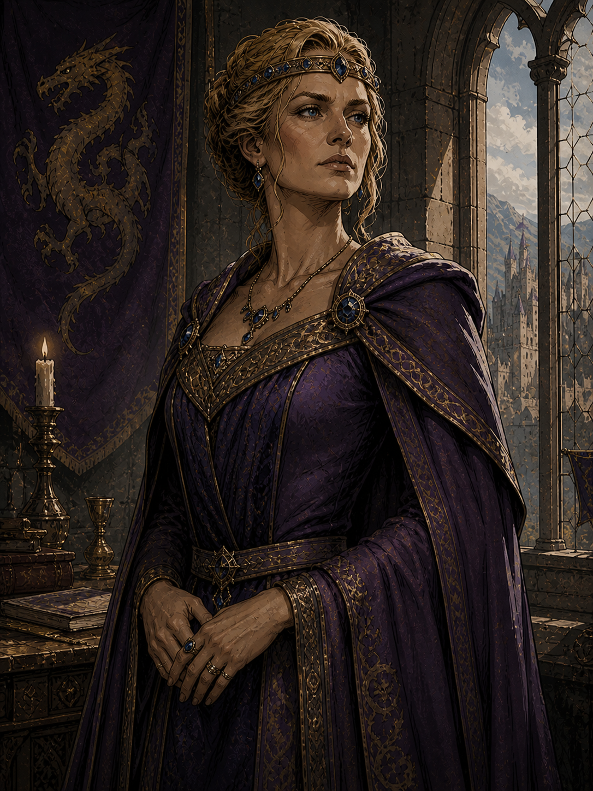

Filfaeril Selzair Obarskyr
Cargo Reina viuda de Cormyr Casa Casa Obarskyr, por matrimonio Familia Viuda de Azoun IV, madre de Alusair Nacacia Obarskyr y de Tanalasta Obarskyr, abuela de Azoun V Raza y clase Humana; guerrera 3/aristócrata 6 (hoja de 1374 DR) Alineamiento Neutral buena Edad a fines de 1374 Aproximadamente 63 años Estado Viva; Alusair ejerce la regencia Fuentes Cormyr (AD&D 2e) · Cormyr: A Novel · Beyond the High Road · Death of the Dragon · Swords of Eveningstar · The Sword Never Sleeps · Elminster’s Daughter · Four from Cormyr · Cormyr: Land of the Purple Dragon
Filfaeril conserva el porte de una reina, pero ya no ocupa el lugar de una consorte junto a un rey adulto. Su esposo ha muerto, su hija mayor también y el futuro de Cormyr descansa en un niño al que otros deben enseñar a gobernar. Ella permanece junto a la regente, con la experiencia necesaria para reconocer qué noble ofrece ayuda, cuál busca una recompensa y cuál espera que la casa real tropiece. La pérdida no la ha apartado de la corte: ha vuelto más dura su manera de contemplarla.1
Los ojos claros y el cabello rubio acompañan una figura delgada y una dignidad que no necesita alzar la voz. Ya en 1369 su belleza había cambiado con los años, y la angustia por Azoun se veía en las ojeras; su inteligencia y su capacidad para comprender a las personas seguían intactas. Cuatro años menor que él, ronda los sesenta y tres a fines de 1374. El nombre Selzair pertenece a la mujer que entró por matrimonio en los Obarskyr, sin convertirse por ello en heredera de su sangre.2
Una corona que no concede el trono
Filfaeril conoce la diferencia entre ceñir una corona y tener derecho a reinar. Cuando la vida de Azoun pendía de un hilo en 1369, reconoció que el matrimonio no le permitía sustituir al soberano como si hubiese nacido Obarskyr. Su influencia era grande; su posición sucesoria, otra cosa. Precisamente por eso entendió que los enemigos de la dinastía no necesitaban limitarse a matar al rey: podían apartar también a los consejeros y dejar una heredera sin apoyo ante quienes pretendieran dirigirla.3
Después de la guerra de 1371, esa comprensión se convirtió en una lección para Alusair. Mientras pasaban los contingentes nobles y el niño Azoun permanecía en brazos de su tía, Filfaeril le recordó dónde se encontraba el poder que debían conservar. La regencia no podía descansar únicamente en el valor de los soldados ni en el afecto por el rey muerto. Requería distinguir a las familias, reconocer sus ambiciones y asegurar que la dinastía sobreviviera a los hombres que ofrecían servirla.1
Amor y deber
Azoun no eligió a Filfaeril solamente por su aspecto. Su temple, su inteligencia y la rapidez con que entendía lo que ocurría a su alrededor formaban parte del vínculo entre ambos. Durante la crisis de 1369, habría querido permanecer junto a él aun ante la muerte. Su deseo de acompañarlo coexistía con la conciencia de que el reino todavía no podía soportar una sucesión vulnerable. El amor por su esposo y la obligación hacia sus hijos no le ofrecían una elección sencilla.23
En 1371 aquel precio fue definitivo. Filfaeril tuvo que comunicar a Vangerdahast que Tanalasta había muerto y que el recién nacido sobrevivía. Le pidió que no cargara los últimos momentos del rey con la noticia de su hija y que le transmitiera su amor. También rogó poder reunirse con él. El mago no se atrevió a hacerlo: la magia que envolvía al moribundo amenazaba a quienes se acercaran y a la otra hija que aún debían proteger. La despedida que la reina deseaba quedó fuera de su alcance.4
El dolor no la hizo abandonar a los supervivientes. Cuando Alusair afrontó el gobierno y la crianza del rey niño, contó con su madre a su lado. Filfaeril podía señalar a quién convenía confiar un encargo y a quién había que vigilar. Su mirada sobre la nobleza se había endurecido; la responsabilidad de conservar a la familia y al reino seguía siendo inmediata.1
Dos hijas ante una misma exigencia
El cariño de Filfaeril nunca significó que sus hijas pudieran actuar sin responder por las consecuencias. En 1348 cortó una interrupción airada de Alusair y obligó a ambas princesas a escuchar por qué la familia dependía del trabajo de Vangerdahast. No necesitó negar sus defectos: sabía que ocultaba cosas y podía ser insoportable. Lo que exigía era que entendieran cuántas veces había mantenido con vida a quienes discutían con él.5
También defendía a sus hijas cuando juzgaba injusta una crítica. En el cumpleaños de Azoun celebrado en Arabel, en 1370, reprochó al mago su comentario sobre el aspecto de Tanalasta. Al mismo tiempo, no consideró irrelevante que Alusair faltara a la celebración: una ausencia real podía hablar ante toda la corte, aunque la persona ausente no estuviese pensando en ceremonias. Para Filfaeril, los gestos de familia tenían consecuencias públicas.6
Su discusión con Tanalasta sobre el templo real de Chauntea fue mucho más dolorosa. La iniciativa religiosa se había anunciado sin resolver sus efectos sobre el gobierno y sobre los War Wizards. El desacuerdo terminó mezclándose con la presión por el matrimonio de la heredera y con su obligación hacia Cormyr. Filfaeril podía respaldar a Tanalasta frente al mago y, en otra cuestión, oponerse a ella con una dureza que la hería. El afecto no borraba las diferencias acerca de cómo servir al reino.7
La autoridad que no grita
En una reunión, Filfaeril escucha informes y deja hablar a quienes han obtenido la información. Esa serenidad no equivale a someterse a sus conclusiones. En 1348, cuando Vangerdahast se negó a facilitar la intervención del Harper Dalonder Ree, ella lo contradijo con una firmeza que no necesitó volumen. Con el apoyo de Azoun y la cooperación de Laspeera, el mago tuvo que aceptar que la decisión no le pertenecía en exclusiva.8
Puede bromear, reprender o convertir una observación tranquila en una orden. Ante una sucesión amenazada, su preocupación no terminaba en las personas de sangre real: también importaban los consejeros capaces de sostenerlas. Su aportación consistía en comprender a las personas y la estructura del peligro. No necesitaba disputar al mago sus conjuros para señalar una debilidad política que estos no resolvían.3
Ese es también su ámbito durante la regencia. Se reúne con Caladnei, Laspeera y los servidores de confianza, escucha lo que se ha descubierto y toma parte en las decisiones que afectan a los Obarskyr. Puede compartir el riesgo sin confundir su cargo con el de la regente ni asumir que todos los guardianes de la corona son un séquito personal.9
Marsember, 1373
La Rightful Conspiracy amenazó a la casa reinante en una nueva crisis. Cuando llegó una invitación a Thundaerlyn Hall acompañada de amenazas veladas, Alusair y Filfaeril comprendieron que se trataba de una trampa. Ambas decidieron acudir en persona.9
Rhauligan protestó: perderlas juntas podía privar al reino de experiencia y continuidad. Filfaeril le respondió que la dinastía no se reducía a ellas mientras Azoun permaneciese seguro y recibiera una buena educación. Su esposo no había vivido apartándose de todo peligro, y ella tampoco quería pasar los días mirando cómo otros actuaban en su lugar. Aceptó que el servidor estuviera dispuesto a rescatarla; no que la encerrara a salvo contra su voluntad.10
Cuando la reunión se convirtió en una batalla entre nobles, magos y dragones, las defensas de Caladnei y Laspeera protegieron inicialmente a madre e hija. Después cedieron. Alusair tuvo que combatir entre los asistentes y Filfaeril aprovechó su propio vestido para cubrir la cabeza de un agresor, desequilibrarlo y atacarlo con la daga. No aguardó inmóvil a que su hija la defendiera.11
Su gema de teletransporte no resolvió la huida: una espada la golpeó y dejó sin efecto la salida esperada. Un balcón se derrumbó sobre el lugar donde se encontraban. Las dos sobrevivieron, cubiertas por los rastros de la lucha; Filfaeril pudo volver a bromear sobre el aspecto de Alusair y pedir que encontraran el camino de regreso. La compostura de la reina no había desaparecido, pero tampoco había detenido por sí sola las armas ni la piedra.1112
Los aliados y la mesa privada
Alaphondar forma parte de su círculo de consejo. La cercanía entre el sabio y la reina alimenta conversaciones en los salones, donde no siempre se distingue entre una relación de confianza y lo que cada interlocutor desea insinuar. Filfaeril también mantiene trato con los magos que sostienen la regencia y con hombres como Rhauligan, cuya lealtad aprecia incluso cuando rechaza la forma en que intenta protegerla.391013
Fuera del ceremonial puede mostrarse mucho menos distante. Su humor alcanza incluso a sus propias limitaciones: puede bromear con que sus conocimientos de cocina se reducen a unos cuantos platos. Tras el desastre de Marsember participó con otros en la preparación de una comida. Son momentos en los que la mujer no desaparece detrás del título, sin que por ello deje de ser la reina viuda de Cormyr.14
Para quienes deben tratar con ella, esa combinación importa: Filfaeril conoce el valor de las formas, pero también sabe cuándo prescindir de ellas. Puede reconocer el sacrificio de un servidor, escuchar un informe desagradable y tomar una decisión que la exponga personalmente. Quien confunda su cortesía con pasividad tendrá que enfrentarse a una mujer que ya ha decidido sobrevivir a pérdidas que no podía evitar y seguir sosteniendo a quienes quedaron.110
Rumores
En los salones de Marsember se habla de su relación con Alaphondar, mezclando insinuaciones, simpatía por la reina y ataques a las demás mujeres de la familia real. No todos los que expresan compasión por Filfaeril desean bien a Alusair o al rey niño. El cotilleo permite medir el tono de una reunión; no garantiza que quienes lo repiten sepan lo que sucede en privado.13
En 1369 circuló otra historia: una reina enloquecida por el estado de su esposo, recluida en Eveningstar e incapaz de intervenir. La versión se mezcló con conversaciones sobre quién debía gobernar si la familia real quedaba debilitada. Quienes repetían aquellos relatos no tenían por ello acceso a las decisiones privadas del palacio.315
Estadísticas (D&D 3.5)
Hoja de juego · 1374 DR
| Tamaño/Tipo | Humanoide Mediano (humano) |
|---|---|
| Alineamiento | Neutral bueno |
| Edad | 63 años (nació en 1311) |
| Características | Fue 11, Des 12, Con 11, Int 17, Sab 15, Car 18 |
| Dados de Golpe | (3d10)+(6d8) (62 PG) |
| Iniciativa | +5 |
| Velocidad | 9 m |
| Clase de Armadura | 14, toque 14, desprevenido 13 |
| Ataque base/Presa | +7/+7 |
| Ataque | Masterwork Dagger +9 c/c (1d4/19-20) |
| Ataque completo | Masterwork Dagger +9/+4 c/c (1d4/19-20) |
| Espacio/Alcance | 1,5 m/1,5 m |
| Salvaciones | Fort +5, Ref +4, Vol +10 |
| Dotes | AlertnessYou have finely tuned senses.Unearthed Arcana, p.89, Improved InitiativeYou can react more quickly than normal in a fight.Unearthed Arcana, p.96, Iron WillYou have a stronger will than normal. You get a +2 bonus on all Will saving throws.Player's Handbook, p.96, LeadershipYou are the sort of person others want to follow, and you have done some work attempting to recruit cohorts and followers.Player's Guide to Faerûn, p.97, NegotiatorYou are good at gauging and swaying attitudes.Player's Guide to Faerûn, p.98, PersuasiveYou have a way with words and body language.Player's Guide to Faerûn, p.98, Quick DrawYou can draw weapons with startling speed.Player's Guide to Faerûn, p.98, Skill Focus (Diplomacy)Choose a skill, such as Move Silently. You have a special knack with that skill.Unearthed Arcana, p.100, Weapon Focus (Dagger)You are especially good at using this specified weapon.Player's Guide to Faerûn, p.102 |
| Habilidades | Averiguar intencionesDetectar mentiras e intenciones ocultas.12 rangos · Sab +16, AvistarAdvertir lo que está a la vista.4 rangos · Sab +8, DiplomaciaNegociar, persuadir y cambiar la actitud de los demás.12 rangos · Car +27, EngañarEngañar, mentir de forma convincente y fintar en combate.10 rangos · Car +16, EscucharOír ruidos y conversaciones.4 rangos · Sab +8, IntimidarAmedrentar y desmoralizar.6 rangos · Car +14, MontarMontar y combatir a caballo.6 rangos · Des +7, Reunir informaciónAveriguar rumores y noticias recorriendo tabernas y mercados.8 rangos · Car +12, Saber (historia)Saber erudito de un campo concreto.6 rangos · Int +9, Saber (nobleza y realeza)Saber erudito de un campo concreto.12 rangos · Int +15 |
| Idiomas | Chondathan, Common, Elven |
Masterwork DaggerPersonalizado - Wizards of the Coast - Player's Handbook, p.116, Ring of Protection +3This ring offers continual magical protection in the form of a deflection bonus of +3 to AC. Faint abjuration; CL 5thDungeon Master's Guide, p.232, Gem of SeeingThis finely cut and polished stone is indistinguishable from an ordinary jewel in appearance. When it is gazed through, a gem of seeing enables the user to see as though she were affected by the true seeing spell (See all things as they truly are, 120' range, PH 296). A gem of seeing can be used for as much as 30…Dungeon Master's Guide, p.257, Amulet of Proof against Detection and LocationThis silver amulet protects the wearer from scrying and magical location just as a nondetection spell does. If a divination spell is attempted against the wearer, the caster of the divination must succeed on a caster level check (1d20 + caster level) against a DC of 19 (as if the caster had cast nondetection on…Dungeon Master's Guide, p.247, Noble's OutfitThis set of clothes is designed specifically to be expensive and to show it. Precious metals and gems are worked into the clothing. to fit into the noble crowd, every would-be noble also needs a signet ring (see Adventuring Gear, above) and jewelry (worth at least 100 gp).Player's Handbook, p.131, Royal Signet of the ObarskyrsSello de la familia real. Quien lo lleva toca el anillo, imagina el rostro del Mago Real y le habla mente a mente (recado con el Mago Real como único destinatario, 3/día). Sirve también de sello y prueba de autoridad real. Lo usan los Obarskyr; un portador prudente se lo quita cuando lo persiguen criaturas que se…Adaptación a 3.5 · Cormyr: Beyond the High Road, Filfaeril's Teleportation GemGema para evacuar a la reina viuda y a quien la acompañe (teleportar 1/día). Un golpe de espada puede quebrarla o inutilizarla, como ocurrió en Marsember en 1373. Moderada conjuración; NL 9Adaptación a 3.5 · Elminster's Daughter p.279-280
Hoja calculada con PCGen (D&D 3.5) · 1374 DR · descargar .pcg
Secretos (DM)
Filfaeril afirmó en la reunión posterior a la crisis de1373 que también era hija de Elminster. Ni ella ni él lo supieron durante algunos años. Su ascendencia no debe confundirse con un poder mágico demostrado ni con un cargo dentro de los Harpers.16
La supuesta locura de1369 encubría una operación de protección. Vangerdahast preparó su estancia en Waterdeep como Aglarra, mientras Alaphondar asumía la identidad de Flammos Galdekund; había una cobertura de viaje por Amn y magos leales dispuestos a cuidarlos. La diadema de zafiros quedó oculta mediante magia.314
La reina viuda conoce el lado coercitivo de la protección dinástica. Después de la guerra entendía que los oficiales y magos que acompañaban a los nobles podían intervenir aunque los señores no hubiesen aceptado realmente todos los términos de su supervisión.1
Después de1374
En un futuro lejano, hacia1489DR, una sociedad llamada Queen Filfaeril’s Blades remontará sus orígenes a los agentes de la reina. Tendrá más de tres docenas de miembros y conservará una tiara a la que algunos atribuirán visiones y presencia espiritual. Sus efectivos y sus dirigentes pertenecen a ese siglo posterior.17
Footnotes
-
Death of the Dragon, pp. 358–359. ↩
-
The Sword Never Sleeps, pp. 48–50; episodio fechado en1348DR. ↩
-
Beyond the High Road, pp. 22–25; episodio fechado en1370DR. ↩
-
Beyond the High Road, pp. 52–57. ↩
-
The Sword Never Sleeps, pp. 142–143; episodio fechado en1348DR. ↩
-
Elminster’s Daughter, pp. 250–252; episodio fechado en1373DR. ↩ ↩2 ↩3
-
Elminster’s Daughter, pp. 284,286–287. ↩
-
Elminster’s Daughter, pp. 192–193; comentarios de personajes, no confirmación de la relación. ↩ ↩2
-
Cormyr: A Novel, p. 146 · Elminster’s Daughter, p. 287. ↩ ↩2
-
Cormyr: A Novel, pp. 121–122,143–146. ↩
-
Elminster’s Daughter, p. 287. ↩
-
Cormyr: Land of the Purple Dragon, p. 143; presente de esa descripción, aproximadamente1489DR. ↩